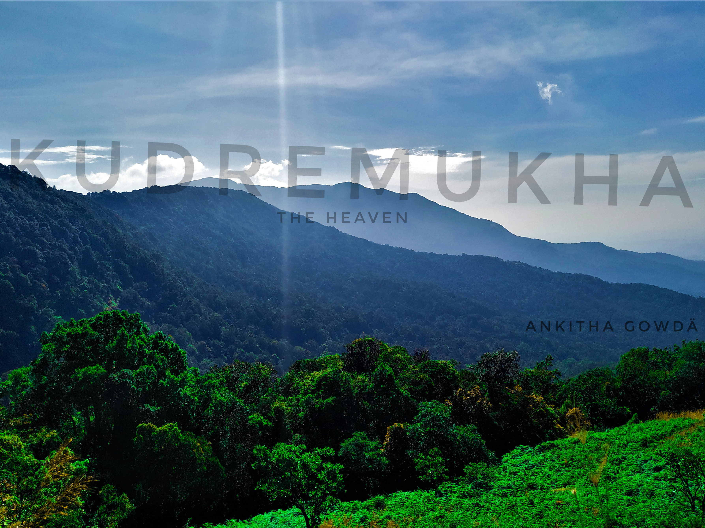
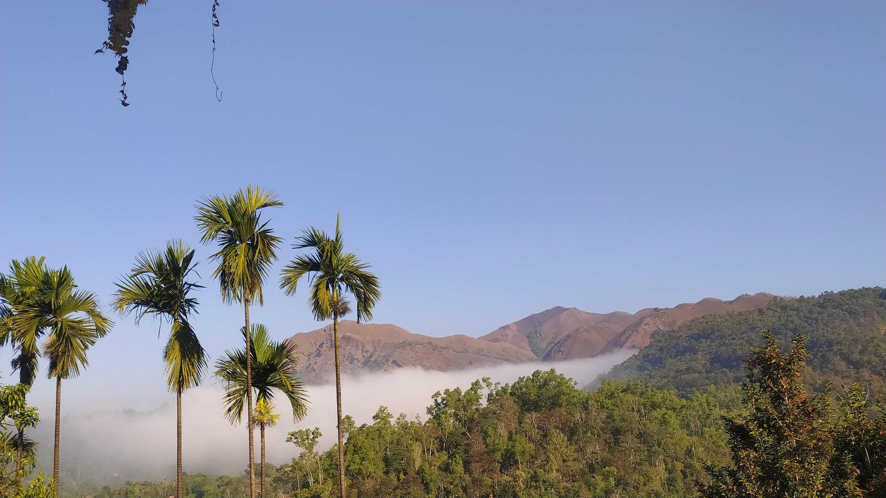
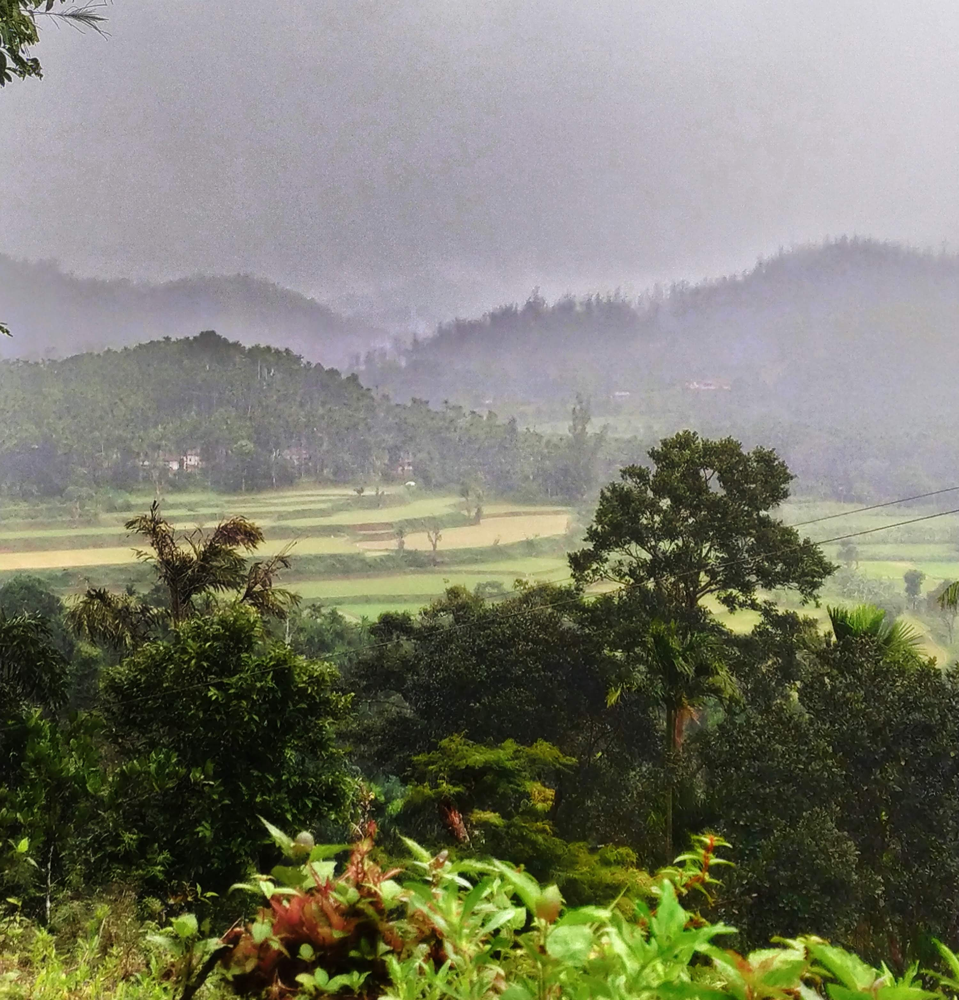

Kudremukha is the name of a mountain range and an individual mountain peak located in Chikmagalur district, Karnataka, India. It is also the name of a small hill station and an iron ore-mining town situated near the mountain, about 20 kilometres from Kalasa in Kalasa Taluk. The name Kuduremukha literally means "horse-faced" in Kannada and refers to a picturesque view of a side of the mountain that resembles a horse's face. Historically, it was also referred to as 'Samseparvata', since it was approached from Samse village. Kuduremukha is Karnataka's 2nd highest peak after Mullayanagiri and the 26th highest peak in the Western Ghats. The nearest International Airport is at Mangalore (99 km away). The Kudremukha National Park in the Western Ghats is part of the world's 38 ‘hottest hotspots’ of biological diversity, a UNESCO World Heritage Site.
Location
The Kudremukha National Park (latitude 13°01'00" to 13°29'17" N, longitude 75°00'55" to 75°25'00" E) is the second-largest Wildlife Protected Area (600.32 km²) belonging to a tropical wet evergreen type of forest in the Western Ghats. Kudremukha National Park is located at the tri-junction of Dakshina Kannada, Udupi, and Chikmagalur districts of Karnataka. The Western Ghats is one of the thirty-four hotspots identified for biodiversity conservation in the world. Kudremukha National Park comes under the Global Tiger Conservation Priority-I, under a format developed jointly by the Wildlife Conservation Society (WCS) and World Wide Fund-USA.
Geography
The town of Kudremukha (KIOCL & others) lies at an elevation of around 815 metres (2,674 ft), whereas the peak stands at 1,894 metres (6,214 ft). The southern and western sides of the park form the steep slopes of the Western Ghats ridgeline, with altitudes varying from 100 m to 1,892 m (peak). The northern, central, and eastern portions of the park consist of rolling hills with a mosaic of natural grasslands and shola forests. Kudremukha receives an average annual rainfall of about 7000 mm, largely due to its evergreen forest cover.
History
National Park: Well-known environmentalist and tiger expert K Ullas Karanth conducted a systematic survey on the endangered lion-tailed macaque in Karnataka (1983–84). His report confirmed that Kudremukha harboured one of the largest contiguous populations of these primates in the Western Ghats. He proposed using the macaque as a 'flagship species' to conserve the entire ecosystem. Based on his findings, the Karnataka State Wildlife Advisory Board recommended the creation of Kudremukha National Park.
Three important rivers — Tunga, Bhadra, and Nethravathi — originate here. A shrine of Goddess Bhagavathi and a Varaha image within a cave are major attractions. Other spots of interest include the Kadambi waterfalls, known for wildlife such as Malabar civets, wild dogs, sloth bears, and spotted deer.
Trekking in Kudremukha
The National Park hosts numerous peaks, each offering breathtaking views of the evergreen forest and the Western Ghats. Notable ones include:
- Kudremukha Peak (1894 m)
- Hanuman Gundi Peak (1700 m)
- Nethravathi Peak
- Elneer Falls
- Kurinjil Peak
- Marakada Kallu (1300 m)
|  | |

|
|
|  |  |